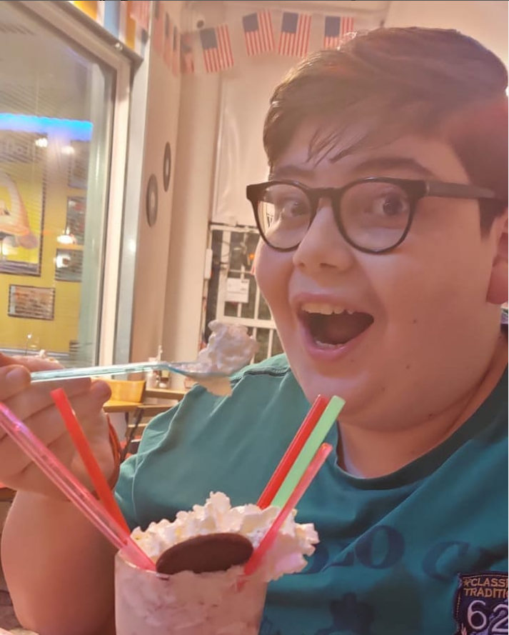

Chi Sono?
Mi chiamo Giuseppe, ho 17 anni e sono nato il 22 Settembre 2004
da poco frequento l'IISS C. Colamonico-Chiarulli di Acquaviva Delle Fonti, vivo a
Casamassima e nella vita vorrei diventare un programmatore
di siti web e applicazioni.
Se vuoi approfondire questa conoscenza o ti interessa parlarmi non esitare a contattarmi
